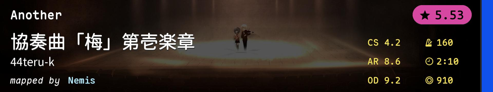
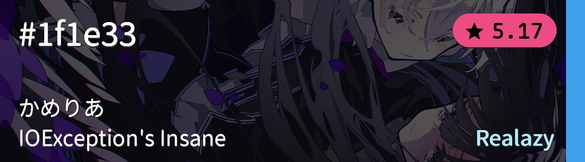
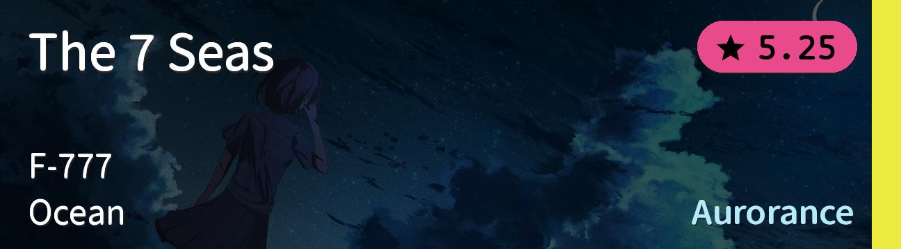
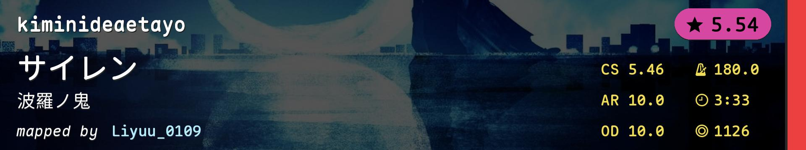
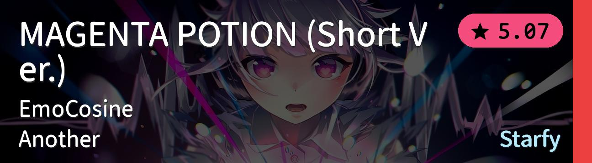
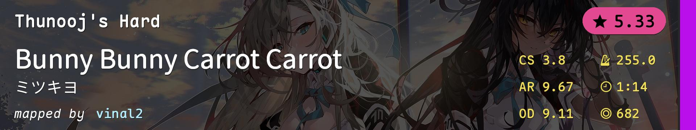
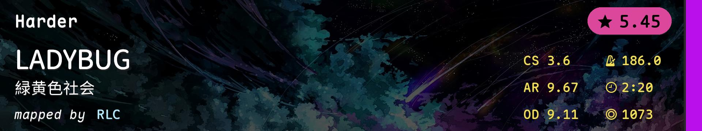
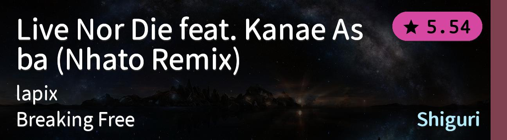

| # |
BID |
Beatmap Info |
Mods |
BPM |
Hit Length |
Max Combo |
CS |
AR |
OD |
Notes |
| 1 |
3521055 |
![Tennoji Rina (CV: Tanaka Chiemi) - Tsunagaru Connect (Mrgglock) [Let's Sing Our Emotions]](./模拟图池（6位数）.covers/1-3521055.jpg) |
NM |
175.0 |
3:44 |
1229 |
4.2 |
9.2 |
9.2 |
跳 |
| 2 |
1627302 |
 |
NM |
160.0 |
2:10 |
910 |
4.2 |
8.6 |
9.2 |
慢速串 |
| 3 |
3986899 |
![ZAQ - Dance In The Game (Petal) [Light's Insane]](./模拟图池（6位数）.covers/3-3986899.jpg) |
NM |
135.0 |
3:02 |
1331 |
4.0 |
9.0 |
8.0 |
alt/手控 |
| 4 |
2708965 |
 |
NM |
181.0 |
2:31 |
1342 |
3.6 |
9.0 |
8.0 |
tech |
| 5 |
4379484 |
![xi - Longinus (Anxient) [Insane]](./模拟图池（6位数）.covers/5-4379484.jpg) |
NM |
212.0 |
4:17 |
2257 |
3.5 |
9.0 |
8.0 |
高速串 |
| 6 |
4570327 |
![remixed celas - Legend of Seeker (Celine) [Insane]](./模拟图池（6位数）.covers/6-4570327.jpg) |
NM |
172.0 |
3:42 |
1539 |
4.0 |
8.8 |
8.0 |
节奏/读谱/手控 |
| 7 |
4034663 |
![Kito Akari - Dear Doze Days (Amateurre) [Marika]](./模拟图池（6位数）.covers/7-4034663.jpg) |
HD |
172.0 |
4:01 |
1463 |
4.0 |
9.4 |
9.0 |
awkward aim |
| 8 |
3764198 |
 |
HD |
140.0 |
2:12 |
752 |
4.0 |
8.5 |
8.0 |
低AR三连音aim |
| 9 |
4049848 |
![*Luna feat. Nenne - Innocent (Graphical) [Expert]](./模拟图池（6位数）.covers/9-4049848.jpg) |
HD |
128.0 |
3:59 |
1336 |
4.0 |
9.0 |
9.0 |
手控/间距串 |
| 10 |
4635297 |
 |
HR |
180.0 |
3:33 |
1126 |
5.46 |
10.0 |
10.0 |
综合 |
| 11 |
3211629 |
![Emilia (CV: Rie Takahashi) - Stay Alive (TV Size) (Aranel) [Please don't go...]](./模拟图池（6位数）.covers/11-3211629.jpg) |
HR |
70.0 |
1:29 |
415 |
7.15 |
10.0 |
10.0 |
小圈 |
| 12 |
3075535 |
 |
HR |
150.0 |
2:20 |
869 |
5.2 |
10.0 |
10.0 |
手控aim |
| 13 |
4207810 |
![Kotoha - Haru o Tsurete (tomatas95) [A New Chapter Begins Between You and Me~]](./模拟图池（6位数）.covers/13-4207810.jpg) |
DT |
195.0 |
2:16 |
758 |
3.8 |
9.67 |
9.11 |
Kohota |
| 14 |
3681500 |
 |
DT |
255.0 |
1:14 |
682 |
3.8 |
9.67 |
9.11 |
切死你 |
| 15 |
2972055 |
 |
DT |
186.0 |
2:20 |
1073 |
3.6 |
9.67 |
9.11 |
DT手控 |
| 16 |
937188 |
|
DT |
262.5 |
2:40 |
1387 |
3.5 |
9.67 |
8.78 |
读图与耐力 |
| 17 |
2140790 |
![Puru - Grimheart (Original Mix) (Necho) [Quantum Rosta's Tolerance]](./模拟图池（6位数）.covers/17-2140790.jpg) |
FM |
170.0 |
4:30 |
2011 |
4.0 |
9.0 |
7.5 |
？ |
| 18 |
4261144 |
![solfa - Battle 3: Shiryoku no Kagiri -The force of mortality- (Lasse) [Garden's Insane]](./模拟图池（6位数）.covers/18-4261144.jpg) |
FM |
148.0 |
1:48 |
815 |
5.0 |
8.0 |
8.0 |
antimod |
| 19 |
4220385 |
![Aice room - For U (Hinsvar) [Loving U]](./模拟图池（6位数）.covers/19-4220385.jpg) |
FM |
152.0 |
2:43 |
1014 |
2.8 |
9.2 |
8.2 |
大圈 |
| 20 |
1877363 |
 |
TB |
147.0 |
5:06 |
2381 |
4.3 |
9.2 |
8.6 |
好听 |